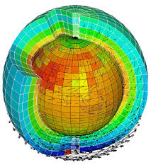

Soulivanh Thao (LSCE)
Philippe Naveau (LSCE), Aurelien Ribes (CNRM), Julien Cattiaux (CNRM)
Mostly based on these two papers:
The process of demonstrating that climate has changed in some defined statistical sense without providing a reason for that change. An identified change is detected if its likelihood of occurrence by chance due to internal variability alone is determined to be small
The process of evaluating the relative contributions of multiple causal factors to a change or event with an assignment of statistical confidence.
Source:
IPCC AR5, Chapter 10.
Assessing the causal effect of human activity through the notion of intervention and counterfactuals
Source:
Hannart, A., J. Pearl, F.E. Otto, P. Naveau, and M. Ghil, 2016: Causal Counterfactual Theory for the Attribution of Weather and Climate-Related Events. Bull. Amer. Meteor. Soc., 97, 99–110, https://doi.org/10.1175/BAMS-D-14-00034.1
Counterfactual
can never be observed in practice.
Intervention
requires to have an experimental group and a control group, which is not possible with only one Earth.
Use climate models to perform controlled experiements.

More on this:
Cattiaux, J. and A. Ribes, 2018: Defining Single Extreme Weather Events in a Climate Perspective. Bull. Amer. Meteor. Soc., 99, 1557–1568, https://doi.org/10.1175/BAMS-D-17-0281.1
Theorems on asymptotic convergence in distribution can provide good approximations
Source:
Coles, S. (2001) An Introduction to Statistical Modeling of Extreme Values. Springer Verlag, Berlin.
http://dx.doi.org/10.1007/978-1-4471-3675-0
The model focuses on the statistical behavior of $$M_n = max\{X_1 , ... , X_n\},$$ where $X_l, ... , X_n$, is a sequence of independent random variables having a common distribution function $F$
Theorem
If there exist sequences of constants $\{a_n > 0\}$ and $\{b_n\}$ such that
$$ \mathbb{P}\{(M_n - b_n)/a_n \leq z \} \rightarrow G(z) \text{ as } n \rightarrow \infty $$
for a non-degenerate distribution function $G$, then $G$ is a member of the GEV family
$$ G(z) = \exp\left\{-\left[1 + \xi \left(\frac{z - \mu}{\sigma}\right)\right]^{-1/\xi}\right\},$$
defined on $\{z : 1 + \xi (z - \mu) / \sigma \geq 0\}$, where $-\infty < \mu < \infty$, $\sigma > 0$ and
$-\infty < \xi < \infty$ $\Box$
In practice , we use the fact that under the theorem asumption $$ \mathbb{P}\{M_n \leq z \} \approx G\{ (z - b_n)/a_n \} = G^*(z),$$ where $G^*$ is another member of the GEV family.
The model focuses on the statistical behavior of $$(X - u) | (X > u) $$ where X has a distribution function $F$
Theorem
If as $n \rightarrow \infty$, $M_n = max\{X_1 , ... , X_n\}$ converges in distribution towards $G$, a member of the GEV family, then for $u$ large enough, the distribution function of $(X - u) | (X > u) $ can be approximated by
$$H(y) = 1 - \left(1 + \frac{\xi y}{\tilde{\sigma}} \right)^{-1/\xi}$$
defined on $\{y : y > 0$ and $(\xi y / \tilde{\sigma}) > 0 \}$
where $\tilde{\sigma} = \sigma + \xi (u - \mu)$ $\Box$
Remark. As for the GEV distribution, the shape parameter $\xi$ is characterizing the behavior of the tail of the distribution:
Average temperature in August in Paris region, i.e. [45N - 50N] x [0E -0E] Temperatures are expressed in terms of anomaly with respect to the 1961-1990 climatology.
$$\{Z \geq u\}$$ where $u = +5.38$° C, the actual anomaly of temperature observed in August 2003
Simulations from CNRM-CM5 model in the context of the Coupled Model Intercomparison Project 5 (CMIP5).
Data are extracted for the experiences:
Remark. In this study, no "historical-nat" simulations are used to represent the counterfactual world
In the factual world, $$ Y_t \sim \mathcal{N}\{\mu_0 + \mu_1 \color{purple}{X_{all}}(t), \sigma_0 \left[1 + \sigma_1 \color{purple}{X_{all}}(t)\right]\} $$ where $\color{purple}{X_{all}}$ is the determimistic response of a climate variable $X$ to all external forcings. $X$ which is assumed to be representative of climate change magnitude over time. $$ X(t) = \color{purple}{X_{all}}(t) + \epsilon_t = \color{red}{X_{ant}}(t) + \color{green}{X_{nat}}(t) + \epsilon_t$$ where $\epsilon_t$ is a noise representing climate internal variability.
In the counterfactual world, $$ Y_t \sim \mathcal{N}\{\mu_0 + \mu_1 \color{green}{X_{nat}}(t), \sigma_0 \left[1 + \sigma_1 \color{green}{X_{nat}}(t)\right]\} $$
Modelled as a noise, with potentially long term memory.
Need to be careful when looking at trends.
Models are based on the same physical equations but potentially different approximations and parametrization.
Models are harder to tune due to their increasing complexity and number of components.
Climate sensitivity (global warming associated with a doubling of atmospheric carbon dioxide) ranges from 2 to 4.5 K (CMIP5).
Source:
Stevens, B. and S. Bony, 2013 : What are climate models missing? Science, 340 (6136), 1053-1054.
$$ X \overset{d}{=} \left( G^{\leftarrow} \circ G^{(m)} \right) \left( X^{(m)} \right) $$ and $$ Z \overset{d}{=} \left( F^{\leftarrow} \circ F^{(m)} \right)\left( Z^{(m)} \right) $$ where $G^{\leftarrow}(.)$ the inverse of $G$, i.e. the quantile function. All variables are assumed to be continuous.
The discrepancy between numerical model $m$ and the true world stays the same in the factual and counterfactual worlds.
Under $H_0$, it is possible to easily make relative comparisons of probabilities
Instead of studying exceedance probabilities like $$ \color{green}{p_0} = \mathbb{P}(X > u ) \; \text{ and } \; \color{purple}{p_1}=\mathbb{P}(Z > u ),$$ we will estimate and interpret record probabilities like $$ \color{green}{p_0}(r) = \mathbb{P}(X > \max(X_1, \dots, X_{r-1}) $$ and $$\color{purple} {p_1}(r) = \mathbb{P}(Z > \max(X_1, \dots, X_{r-1})) $$ where the usual threshold $u$ has been replaced by $\max(X_1, \dots, X_{r-1})$.
Under exchangeability $$ \color{green} {p_0} = \mathbb{P}(X > X_1) = \frac{1}{2} \mbox{ and } {\color{purple} p_1} = \mathbb{P}(Z > X) $$
If Model $m$ satisfies condition $H_0$, then $$ \color{darkgreen} {p_1} = \color{darkgreen} {p_1}^{(m)} $$ Indeed, $$ \begin{aligned} \color{darkgreen} {p_1}^{(m)} & = \mathbb{P}(Z^{(m)} > X^{(m)}) \\ & = \mathbb{P}\left(G^{\leftarrow} \circ G^{(m)}(Z^{(m)}) > G^{\leftarrow} \circ G^{(m)}(X^{(m)}) \right) \\ & \stackrel{H_0}{=} \mathbb{P}\left(F^{\leftarrow} \circ F^{(m)}(Z^{(m)}) > G^{\leftarrow} \circ G^{(m)}(X^{(m)}) \right) \\ & = \mathbb{P}(Z^{(m)} > X^{(m)}) = \color{darkgreen}{p_1} \end{aligned} $$ Under $H_0$, there is no need to correct Model $m$. Huge gain!!!
We assume that:
So time indexing is needed for $$\color{purple}{p_{1,t}}^{(m)} = \mathbb{P}(Z_t^{(m)} > X_t^{(m)})$$
As $\color{purle}{p_{1,t}}^{(m)} = \mathbb{E}\left( G (Z_t)) \right)$ is an expectation, the Nadaraya-Watson estimator can be defined $$ \color{purple} {\hat{p}_{1,t}}^{(m)} = \frac{1}{\sum K(t-t_j)} \sum_{j=1}^J K(t-t_j) \, \mathbb{G}^{(m)}\left(Z^{(m)}_{t_j}\right) $$ where $K$ is a weighting Kernel and $\mathbb{G}^{(m)}$ is the empirical cdf from $X_{1:t}^{(m)}$
Coupling statistical properties of $\frac{1}{\sum K(t-t_j)} \sum_{j=1}^J K(t-t_j) \, {\color{red} G}^{(m)}\left(Z^{(m)}_{t_j}\right)$, see e.g. Hardle (1991), and empirical process results , see e.g. Mason and Van Zwet (1987), provide asymptotic confidence intervals when ${\color{red} G}^{(m)}$ is replaced by $\mathbb{G}^{(m)}$
Sources:
Härdle,W. (1991) Smoothing Techniques: With Implementation in S. Springer Series in Statistics. NewYork: Springer-Verlag.
Mason, D. M., and W. R. Van Zwet, 1987: A refinement of the KMT inequality for the uniform empirical process. Ann. Probab., 15, 871884, https://doi.org/10.1214/aop/1176992070.
If we assume that there is a period of time, $T$, when the factual climate is like the counterfactual climate , i.e. $$ F_t \overset{d}{=} G \; \text{for} \; t \in T $$ then, for the period $T$, it implies that under $H_0$ $$ F^{\leftarrow} \circ F^{(m)} = G^{\leftarrow} \circ G^{(m)} \implies F^{\leftarrow} \circ F^{(m)} = F^{\leftarrow} \circ G^{(m)} \\ \color{red}{\implies F^{(m)} = G^{(m)}} $$
Test for equality of distribution between samples $\{X_t^{(m)}: t \in T\}$ and $\{Z_t^{(m)}: t \in T\}$.
Here, we choose a period, $T=\{1850:1900\}$, corresponing to the pre-industrial period and we use the Cramer-von Mises two-sample test.
$$ \color{purple}{\hat{p}_{1,t}}^{(.)}= \sum_{m=1}^{M} w_m \times \color{purple}{\hat{p}_{1,t}}^{(m)} $$ where we chose $w_m$ to be proportional to exponetial of minus the Cramer-von Mises two-sample statistic.
Note the total variance is approximated by $$ \sum_{m=1}^{M} w^2_m \times \left( \hat{\sigma}^2_t + ( \hat{\sigma}^{(m)}_t)^2 \right) $$ with $$ \hat{\sigma}^2_t = \dfrac{1}{M} \sum_{m = 1}^{M} \big(\color{purple}{\hat{p}_{1,t}}^{(m)} - \color{purple}{\hat{p}_{1,t}}^{(.)}\big)^2 $$